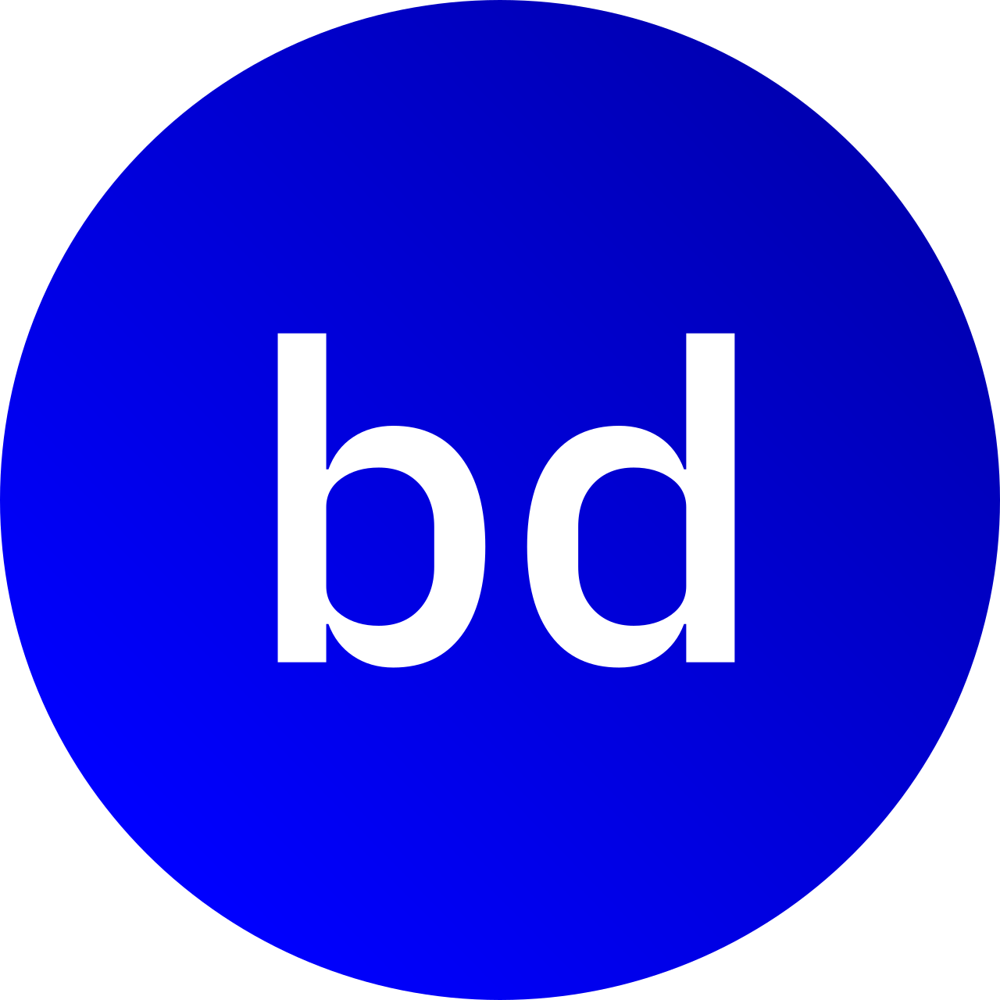

EPISODIOS
NOSOTROS
ENTREVISTAS
TÓPICOS
Episodios
Invitadas/os estelares
Algunos de nuestros temas
Trabajo remoto
Repensando la
programación
Bases del código
Seguridad
informática
¿Quieres las últimas novedades?
ESCUCHA LOS EPISODIOS